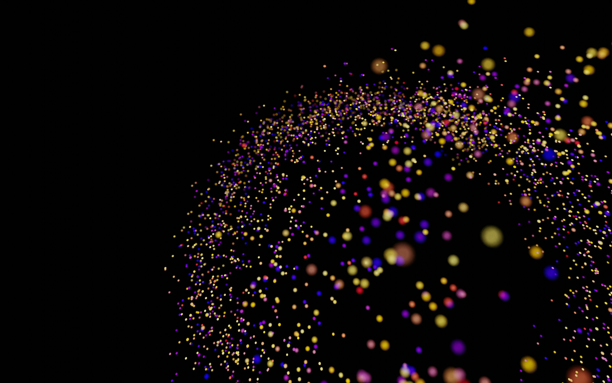
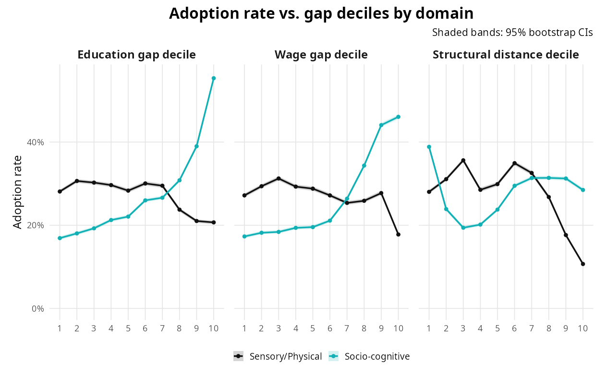
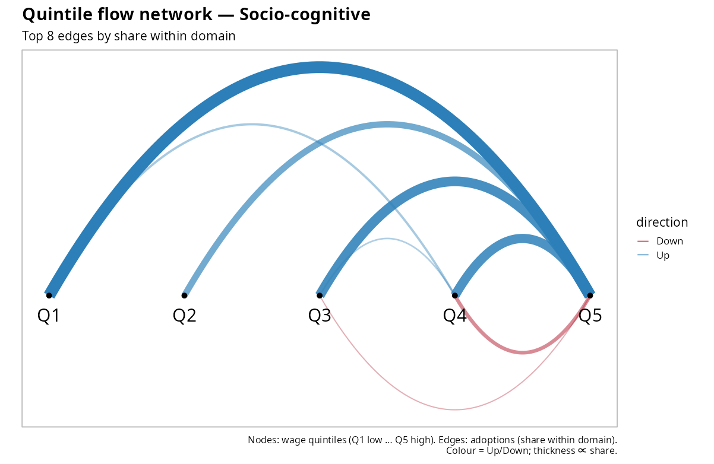
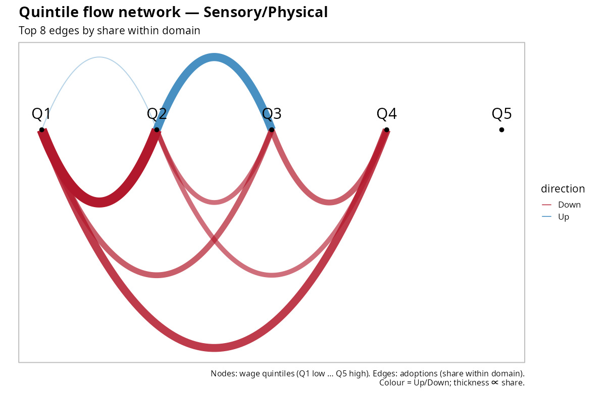
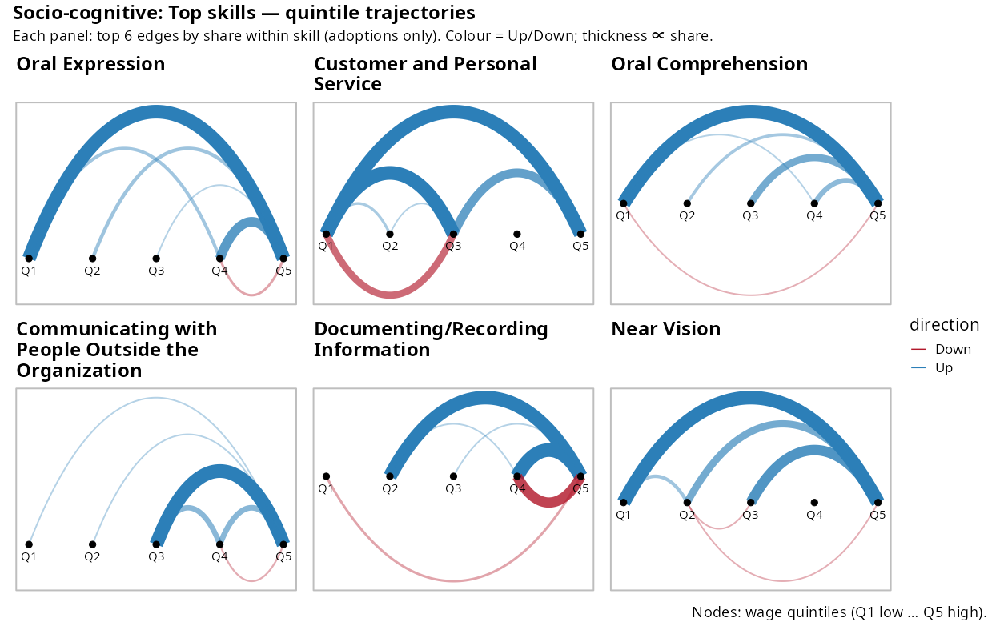
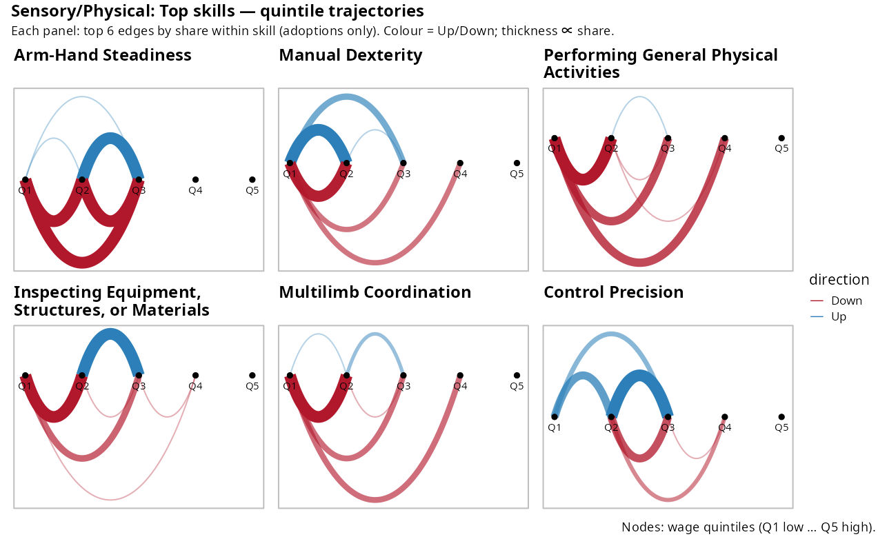
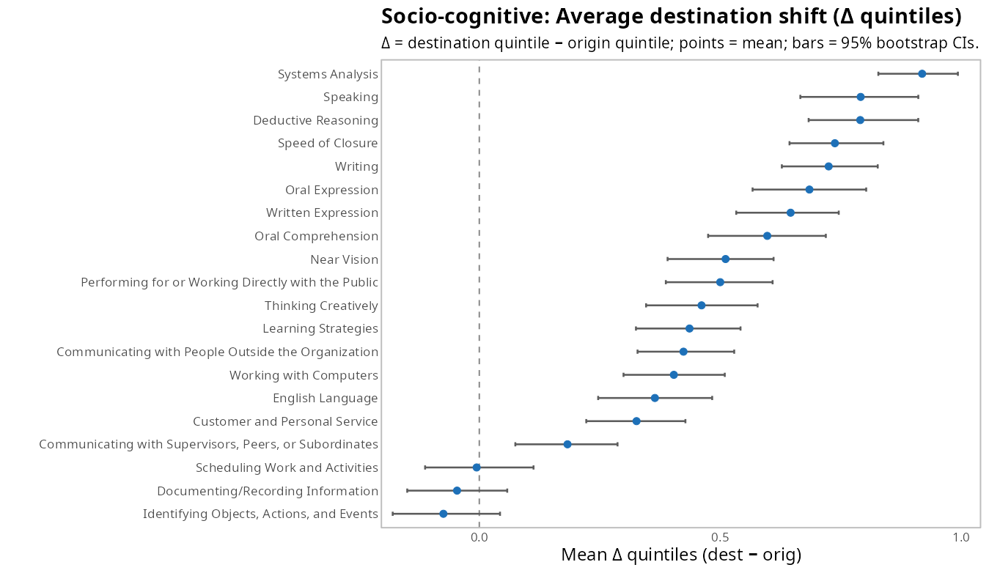
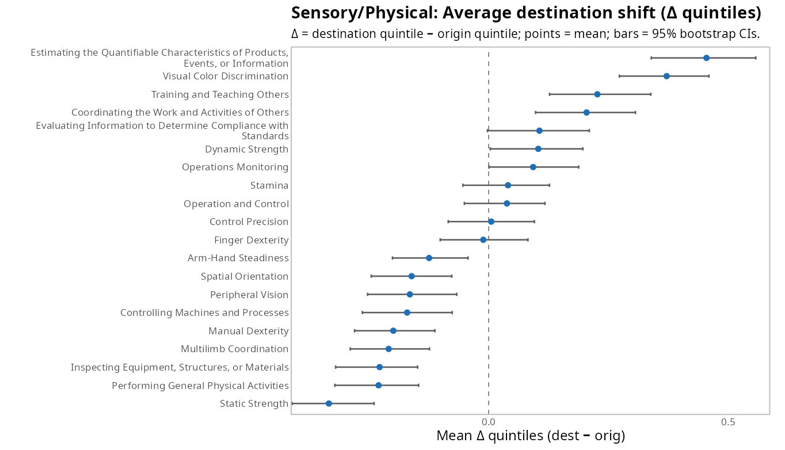
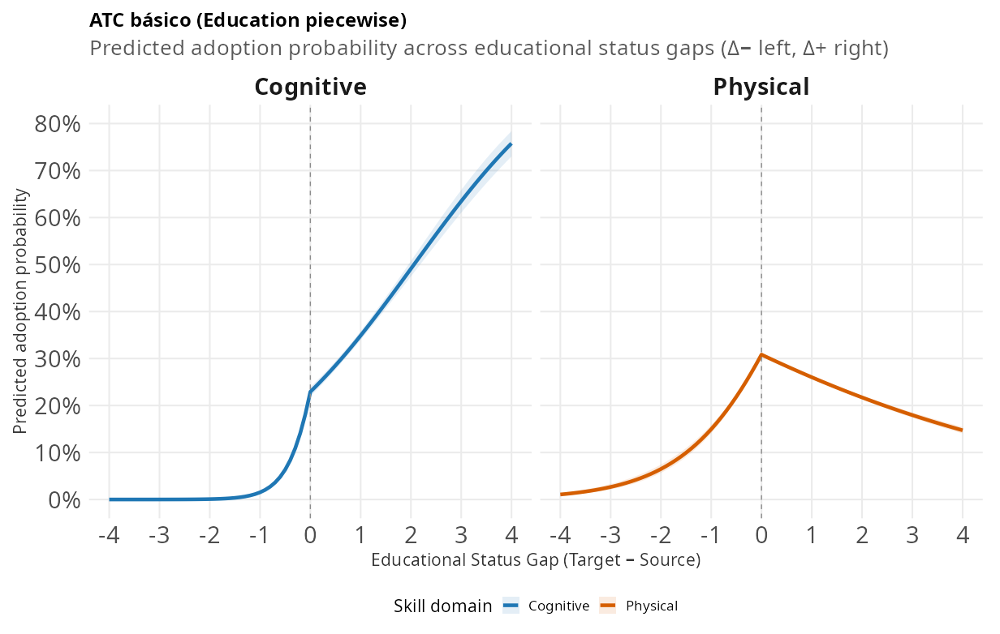
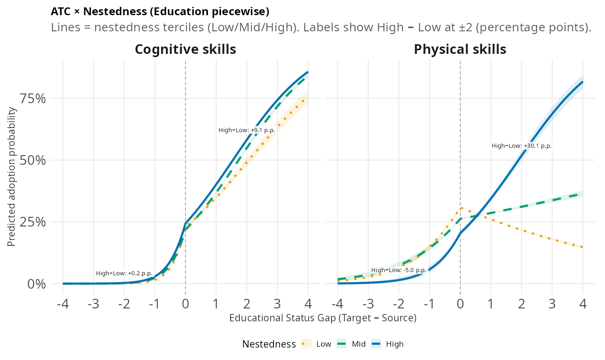

%% Mermaid v11 – diagrama estilizado
%% Curvas suaves y etiquetas HTML activadas
%% Colores combinados con tu paleta (teal / azul petróleo)
%%{init: {
"theme": "base",
"themeVariables": {
"fontFamily": "Inconsolata, monospace",
"primaryColor": "#e8f3f6",
"primaryBorderColor": "#0a6d7c",
"primaryTextColor": "#0a4e58",
"lineColor": "#0a6d7c",
"noteBkgColor": "#fff8e6",
"noteTextColor": "#374151"
},
"flowchart": { "htmlLabels": true, "curve": "basis" }
}}%%
flowchart LR
%% --- Columnas: t0 a la izquierda, t1 a la derecha ---
subgraph T0["<b>t₀</b> · línea base"]
direction TB
I["<b>i</b>: especialista en <b>s</b>"]
J["<b>j</b>: no usa <b>s</b>"]
end
subgraph T1["<b>t₁</b> · seguimiento"]
direction TB
JP["<b>j</b>: ¿adopta <b>s</b>?"]
end
%% --- Flechas y anotaciones ---
I -- " " --> J
J -- " " --> JP
%% Nota sobre la flecha principal (exposición + brechas)
M:::note --- J
M["<b>Exposición</b> (X<sub>ij</sub>)<br/><span style='opacity:.85'>
Jaccard,
dist. skill–skill,
relatedness occ–occ,
misma NAICS,
reach,
co-adopción</span><br/><b>brechas</b> (status): Δ<sup>+</sup>, Δ<sup>−</sup>"]
%% --- Estilos de nodos y subgráficos ---
classDef box fill:#ffffff,stroke:#0a6d7c,stroke-width:2px,color:#0a4e58;
classDef group fill:#f4f8fb,stroke:#d9e2ec,stroke-width:1px,color:#0a4e58;
classDef note fill:#fff8e6,stroke:#f5d48a,stroke-width:1px,color:#374151;
class I,J,JP box;
class T0,T1 group;
%% --- Estilos de enlaces (más gruesos; el segundo punteado) ---
linkStyle 0 stroke:#0a6d7c,stroke-width:3px;
linkStyle 1 stroke:#0a6d7c,stroke-width:3px,stroke-dasharray:6 5;

Asymmetric Trajectory Channeling in Labor Markets
Cómo se propagan los requerimientos y por qué preservan jerarquías
Roberto Cantillan & Mauricio Bucca
Sociología | Pontificia Universidad Católica de Chile
EL PUZZLE
- El cambio tecnológico y organizacional redistribuye la demanda por tareas de forma desigual entre ocupaciones.
- Aun con mayor productividad, la desigualdad puede aumentar: algunos perfiles suben en demanda y salarios, otros no.
- Sabemos mapear el paisaje estático (polarización, fronteras, anidamiento), pero no la regla que lo activa.
Pregunta central
> ¿Cómo y por qué ciertos requerimientos llegan a unas ocupaciones y no a otras cuando cambia la demanda, y por qué ese proceso reproduce jerarquías de estatus?
Polarización


Anidamiento y jerarquía


Qué falta en la literatura
Sabemos mucho del mapa estático:
- Polarización de habilidades (socio-cognitivas vs sensorial/físicas) alineada con educación y salarios.
- Fronteras de movilidad ocupacional: límites, fragmentación, diferenciación.
- Anidamiento (nestedness): cadenas asimétricas de dependencia (algunas habilidades actúan como “andamiaje”).
Pregunta abierta (dinámica): ¿Por qué regla de propagación viajan los requisitos ocupación→ocupación, y cómo esa regla reproduce la jerarquía del mapa?
Nuestra contribución
Especificamos y estimamos una regla de propagación de adopción \((i\!\to\!j,s)\) con:
- Penalidades direccionales por estatus: \(\Delta_{ij}^{+}\) (subida), \(\Delta_{ij}^{-}\) (bajada).
- Exposición estructural \(\mathbf{X}_{ij}\): complementariedad de skills, relatedness ocupacional, industria, “reach”, co-adopción.
Mostramos un regularidad macro: Asymmetric Trajectory Channeling (ATC)
— las habilidades socio-cognitivas suben con menor penalidad y menor fricción; las sensorial/físicas quedan lateralizadas y son más sensibles a la distancia.La selectividad aumenta con el anidamiento de la habilidad (alto \(c_s\)/reach ⇒ menor penalidad de subida, mayor retorno a la exposición).
II. QUÉ MEDIMOS: LA “MOLÉCULA” DEL EVENTO
Definición (I): unidades y conjuntos
Unidad y tiempos. Tripletas (origen, destino, requerimiento) \((i \to j, s)\) entre cortes \(t_0\) (línea base) y \(t_1\) (seguimiento).
Conjuntos por \(s\): \[ S_s=\{\,i:\mathrm{RCA}_{t_0}(i,s)>1\,\}\quad\text{(especialistas en $t_0$)} \] \[ A_s=\{\,j:\mathrm{RCA}_{t_1}(j,s)>1\,\}\quad\text{(usuarios en $t_1$)} \] \[ N_s=A_s\setminus S_s\quad\text{(nuevos adoptantes)} \]
Lectura operativa. Para cada \(s\), \(S_s\) “emite” y \(N_s\) “recibe” entre \(t_0\!\to\!t_1\).
Definición (II): eventos de difusión
Evento positivo (adopción observada): \[ E_s^{+}=\{(i,j,s):\, i\in S_s,\ j\in N_s,\ i\neq j\}. \]
Evento negativo (oportunidad no realizada): \[ E_s^{-}=\{(i,j,s):\, i\in S_s,\ j\notin A_s,\ i\neq j\}. \]
Notas.
- Se evalúa por descriptor \(s\) y entre \(t_0\!\to\!t_1\).
- \(E_s^{+}\) y \(E_s^{-}\) forman el riesgo diádico para modelar \(Y_{i\to j,s}\in\{0,1\}\).
Definición (III): brechas y exposición
Brechas direccionales de estatus (z-score anual: educación o salario): \[ \Delta_{ij}^{+}=\max\{0,\,\mathrm{status}(j)-\mathrm{status}(i)\},\qquad \Delta_{ij}^{-}=\max\{0,\,\mathrm{status}(i)-\mathrm{status}(j)\}. \] Propiedades: \[ \Delta_{ij}^{+}\Delta_{ij}^{-}=0,\qquad \Delta_{ij}^{+}+\Delta_{ij}^{-}=|\mathrm{status}(j)-\mathrm{status}(i)|. \]
Exposición estructural \(\mathbf{X}_{ij}\) (medida en \(t_0\)):
- superposición de especialistas (Jaccard),
- relatedness occ–occ (coseno, NAICS),
- historial de co-adopción. (*)
- nestedness (c_s): contribución de (s) al patrón anidado del sistema
- reach: alcance de dependencia (tamaño del conjunto alcanzable en la red dirigida de dependencias) (*)
- (controles) frecuencia (popularidad) / entropía (dispersión) del skill
La molécula que observamos
III. DATOS Y DISEÑO
Fuentes y universo
- O-NET SKA (2015–2024): 161 descriptores unificados (Skills–Knowledge–Abilities).
- BLS: salarios y educación ocupacionales (anuales, z‑score).
- NAICS: control por industria; teletrabajabilidad y exposición a IA para interacciones temporales.
Unidad de análisis (oportunidad de difusión). Un triplete \((i\!\to\! j, s)\) tal que, en \(t_0\), el origen \(i\) ya especializa \(s\) y el destino \(j\) aún no: \(i\in S_s,\; j\notin S_s,\; i\neq j\), donde \(S_s=\{i:\mathrm{RCA}_{t_0}(i,s)>1\}\).
Adopción (materialización de la oportunidad). La oportunidad se concreta si, en \(t_1\), el destino \(j\) pasa a especializar \(s\): \(j\in A_s\), con \(A_s=\{j:\mathrm{RCA}_{t_1}(j,s)>1\}\).
Diagnóstico temporal y calidad
- Cambios sustantivos en la mayoría de pares ocupación–requerimiento.
- Construimos versiones de tres cortes cuando el panel lo permite y verificamos consistencia con la rotación O*NET (eventos de primera adopción, intervalo‑censurados).
IV. QUÉ PASA EN LOS DATOS







V. MODELOS
Especificación de dos cortes (logit)
Modelamos la probabilidad de adopción \(Y_{i\to j,s}\in\{0,1\}\) con efectos fijos del origen:
\[ \operatorname{logit}\,\Pr\!\big(Y_{i\to j,s}=1\big) = \alpha_c + \boldsymbol{\gamma}_c^{\top}\mathbf{X}_{ij} - \beta_c^{+}\,\Delta_{ij}^{+} - \beta_c^{-}\,\Delta_{ij}^{-} + \mu_i, \]
donde \(c \in \{\text{socio-cognitivo},\, \text{sensorial/físico}\}\).
Asimetría direccional del tipo \(c\): \(\ \beta_c^{-}-\beta_c^{+}\).
Interpretación:
- \(\Delta_{ij}^{+}\): “subida” de estatus (destino \(>\) origen).
- \(\Delta_{ij}^{-}\): “bajada” de estatus (origen \(>\) destino).
- \(\mathbf{X}_{ij}\): exposición/afinidad estructural en \(t_0\).
- \(\mu_i\): FE(origen) captura rasgos invariables del emisor (industria, recursos, historia).
Variante de destino (susceptibilidad a adoptar)
\[ \operatorname{logit}\,\Pr(Y=1) = \alpha_c + \boldsymbol{\gamma}_c^{\top}\mathbf{X}_{ij} - \beta_c^{+}\,\Delta_{ij}^{+} - \beta_c^{-}\,\Delta_{ij}^{-} + \nu_j, \]
y una versión condicional con \(\mu_i\) y \(\nu_j\) (doble FE en estratos diádicos; ver SI).
VI. RESULTADOS (RESUMEN)


Líneas = terciles de nestedness (Low/Mid/High); bandas = IC. La selectividad del ATC se intensifica con el anidamiento, especialmente en habilidades físicas.
Lectura rápida (modelo → resultados)
- ATC básico: en socio-cognitivas, Δ⁺ eleva la adopción; en sensoriales/físicas, la subida se frena y se vuelve frágil.
- ATC × nestedness: mayor anidamiento ⇒ más selectividad (pendientes Δ⁺ más empinadas en físicas; amplificación moderada en cognitivas).
- Implicancia: embudo hacia extremos y middle hollowing en portafolios de destino.
Hechos estilizados
- ATC: para socio‑cognitivas, penalidad ascendente atenuada y baja sensibilidad a la distancia; para sensoriales/físicas, contención lateral y alta sensibilidad a la distancia.
- El patrón persiste con FE(origen), FE(destino) (falta: hazards con intervalos).
Magnitudes representativas (educación; log-odds)
FE dual (μᵢ, νⱼ)
Δ⁺ (subida): Cognitivas +0.434 (p<1e−8) vs Físicas −0.786 (int.=−1.22, p<1e−30).
⇒ Subir favorece cognitivas y penaliza físicas (H1).Δ⁻ (bajada): Cognitivas +0.045 (ns) vs Físicas +1.975 (int.=+1.93, p<1e−4).
⇒ Físicas exhiben sesgo a bajadas/lateralización.Brecha direccional: (β⁻−β⁺) Cognitivas −0.389; Físicas +2.76.
Notas: log-odds; controles \(\mathbf{X}_{ij}\) y FE de origen/destino incluidos.
Robustez
- Umbrales: RCA 0.9/1.0/1.1 y top-\(k\) → patrón ordinal inalterado.
- Distancias: caminos mínimos / resistencia (skill–skill) y coseno (occ–occ) → mismas pendientes relativas.
- Periodos: 2015–2018 / 2019–2021 / 2022–2024 → persistencia del ATC.
- Representaciones: habilidad–habilidad y ocupación–ocupación → coinciden ordinalmente.
VII. IMPLICANCIAS
Lectura sustantiva
- ATC traduce mapas estáticos (polarización, fronteras de movilidad) en reproducción dinámica: quién puede subir cuando cambian los requerimientos.
- Identifica palancas: reducir penalidades ascendentes o distancia efectiva para habilidades sensoriales/físicas conlleva mayor capilaridad hacia destinos medios/altos.
Próximos pasos
- Hazards con intervalos (cloglog, offset de duración, FE de ola) para explotar la rotación O*NET y modelar primera adopción
- validaciones externas (ESCO, UK)
- contrafactuales de “puentes” (co‑especializaciones, pipelines de credenciales).
GRACIAS
Roberto Cantillan — rcantillan@uc.cl
Mauricio Bucca — mbucca@uc.cl
Q&A
Espacio ocupacional de habilidades
Ventaja Comparativa Revelada (RCA): \[ \mathrm{RCA}(j,s)= \frac{\mathrm{onet}(j,s)\big/\sum_{s'\in S}\mathrm{onet}(j,s')} {\sum_{j'\in J}\mathrm{onet}(j',s)\big/\sum_{j'\in J,\;s''\in S}\mathrm{onet}(j',s'')} \]
- Lectura:
- Numerador: proporción de la habilidad \(s\) dentro del total de requisitos de la ocupación \(j\).
- Denominador: proporción de la habilidad \(s\) en toda la economía (todas las ocupaciones).
- Criterio: \(\mathrm{RCA}>1 \Rightarrow\) \(j\) tiene ventaja comparativa en \(s\) (uso efectivo).
Red de complementariedad entre habilidades (Leiden → 2 clústeres principales): \[ \theta(s,s') \;=\; \frac{\sum_{j\in J} e(j,s)\,e(j,s')} {\max\!\Big(\sum_{j\in J} e(j,s),\ \sum_{j\in J} e(j,s')\Big)} \]
- \(e(j,s)\) indica especialización/uso efectivo de \(s\) en \(j\) (p.ej., \(e=1\) si \(\mathrm{RCA}>1\)).
- \(\theta(s,s')\) mide cuán frecuentemente co-especializan \(s\) y \(s'\) (normalizado por la habilidad más común).
Construcción de eventos de difusión
Eventos positivos (diffusion = 1):
- Fuentes: \(S_s=\{\,j:\mathrm{RCA}_{2015}(j,s)>1\,\}\).
- Usuarios finales: \(A_s=\{\,j:\mathrm{RCA}_{2024}(j,s)>1\,\}\).
- Nuevos adoptantes: \(N_s=A_s\setminus S_s\).
- Eventos +: \(\{\, (i,j,s):\ i\in S_s,\ j\in N_s,\ i\neq j \,\}\).
Eventos negativos (diffusion = 0):
- No adoptantes: \(\overline{A_s}=J\setminus A_s\) (ocupaciones que no usan \(s\) en 2024).
- Eventos −: \(\{\, (i,j,s):\ i\in S_s,\ j\in \overline{A_s},\ i\neq j \,\}\).
Resultado: un dataset diádico exhaustivo de todas las oportunidades de difusión posibles para cada \(s\) entre 2015→2024 (positivas y negativas).
¿Qué es “nestedness” (1/2) — Operativo
Que es:
- Construimos la matriz binaria de presencia \(M_{o\times s}\) (ocupación × skill) para un año \(t\)
— presencia por umbral/RCA (como en el paper). - Calculamos la nestedness observada \(\mathrm{NODF}_{\text{obs}}\) del bipartito.
- Para cada skill \(s\): fijamos su grado \(k_s\) (nº de ocupaciones que requieren \(s\)) y aleatorizamos su columna muchas veces manteniendo \(k_s\) para obtener la distribución nula \(\{\mathrm{NODF}^{(s)}_{\text{rand}}\}\).
- Con esa nula, medimos el aporte marginal de \(s\) a la nestedness del sistema.
Cómo leerlo:
- \(c_s\) alto \(\Rightarrow\) \(s\) hace más anidada la red (actúa como andamiaje: p.ej., analítica, gestión, comunicación).
- \(c_s\) bajo (o negativo) \(\Rightarrow\) \(s\) terminal/angosta; su presencia no estructura el tejido (p.ej., técnica muy específica).
Parámetros prácticos:
- Iteraciones \(B\): fast-pass bajo para exploración; alto en el pase final.
- Presencia por umbral/RCA; reportamos robustez.
- Opcional: usar “reach”/conectividad para filtrar columnas extremas.
Q&A • ¿Qué es “nestedness” (2/2)
Definición formal (z-score por skill): \[ c_s \;=\; \frac{\mathrm{NODF}_{\text{obs}} - \mathbb{E}\!\left[\mathrm{NODF}^{(s)}_{\text{rand}}\right]} {\mathrm{sd}\!\left[\mathrm{NODF}^{(s)}_{\text{rand}}\right]} \]
Pseudocódigo (idea):
- \(M \leftarrow\) matriz de presencia \(o\times s\) en \(t\).
- \(\mathrm{NODF}_{\text{obs}} \leftarrow \mathrm{NODF}(M)\).
- Para cada \(s\):
- \(k_s \leftarrow \sum_o M_{os}\) (grado).
- Repetir \(b=1,\dots,B\): muestrear \(k_s\) ocupaciones, construir \(M^{(b)}\) con la columna \(s\) permutada a grado fijo \(\Rightarrow\) \(\mathrm{NODF}^{(b)}\).
- \(c_s \leftarrow\) z-score con \(\{\mathrm{NODF}^{(b)}\}_{b=1}^B\).
- \(k_s \leftarrow \sum_o M_{os}\) (grado).
Interpretación rápida:
- \(c_s\) alto \(\Rightarrow\) “abre escalones” y reduce huecos (andamiaje).
- \(c_s\) bajo \(\Rightarrow\) capacidad terminal (poco efecto en la arquitectura).
Cantillan & Bucca | ATC — Workshop Inequality & Stratification Research 2025